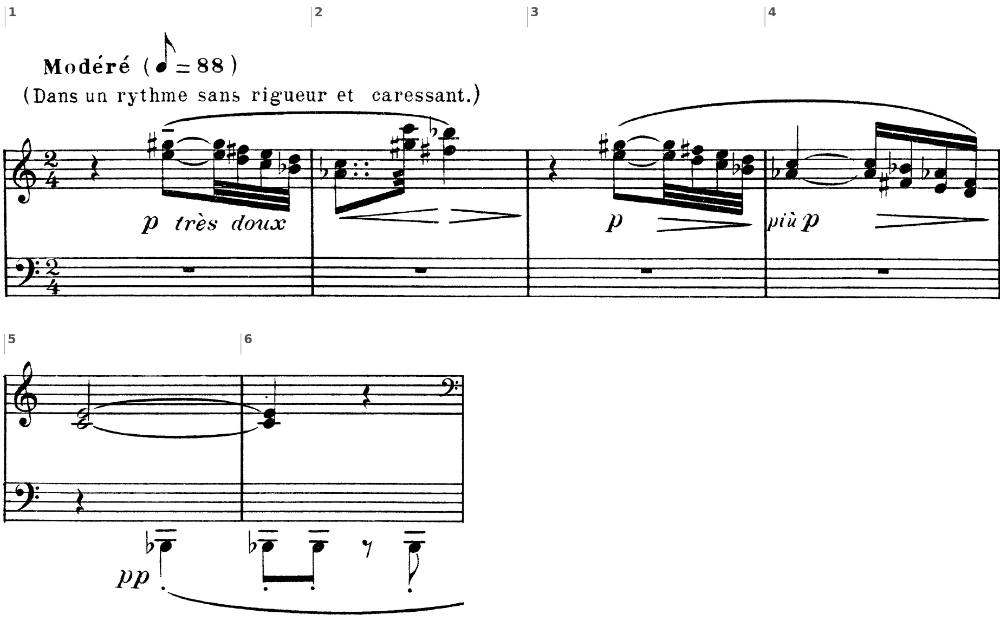
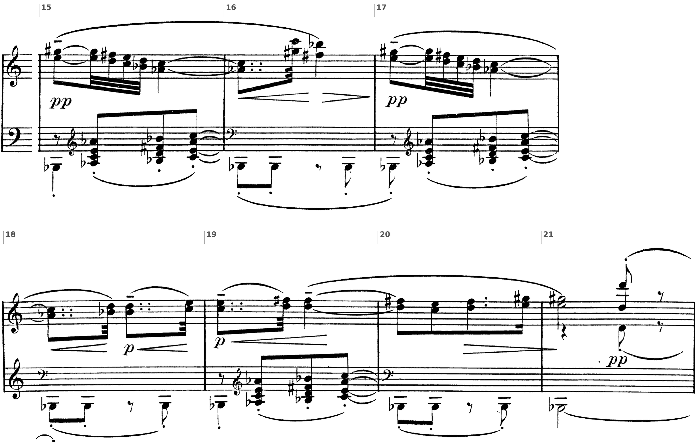
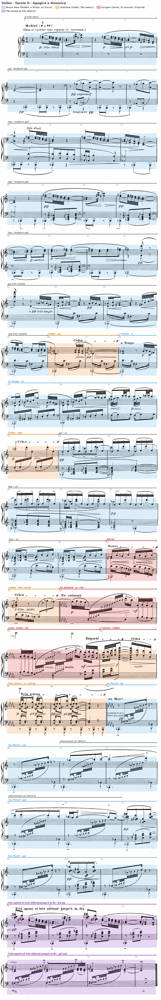
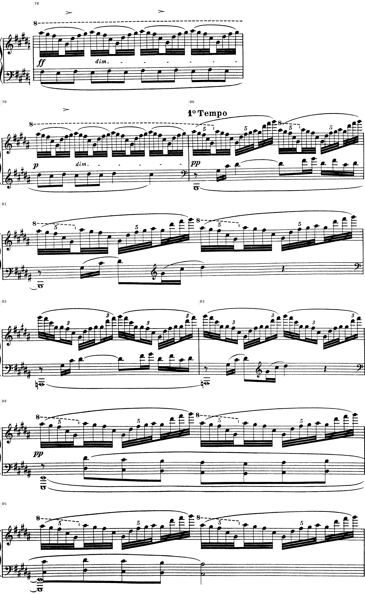
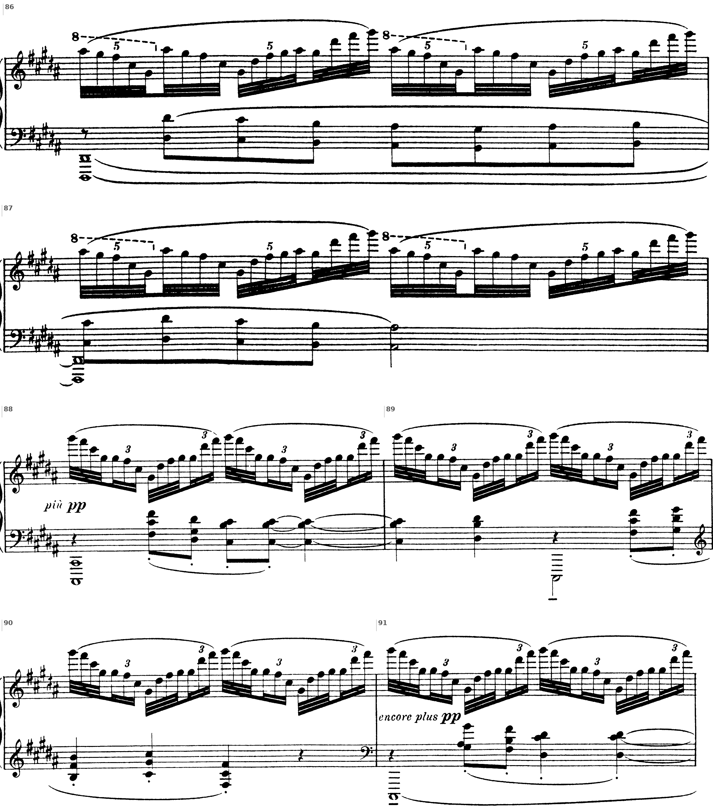
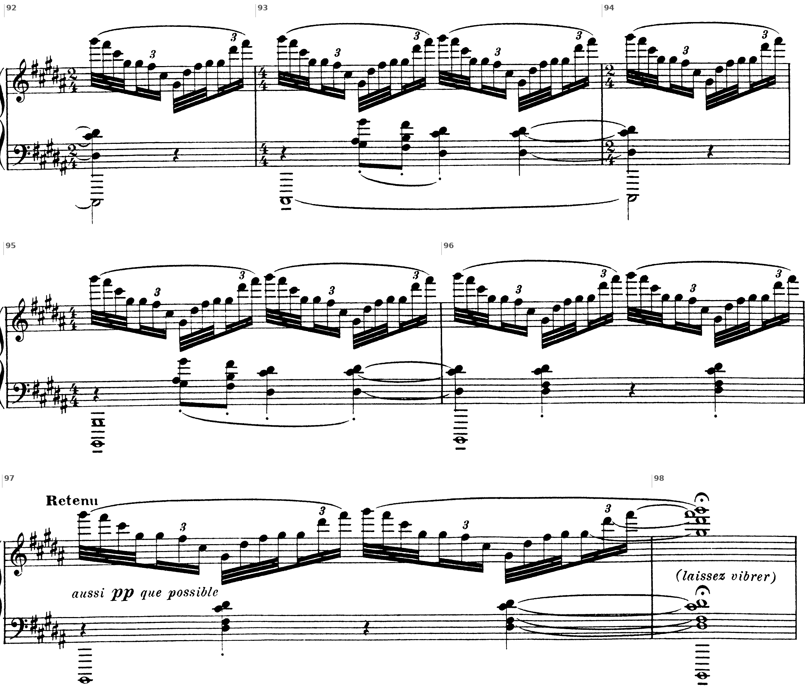

Bb. 1–6 · La prima frase: due linee esatonali in terze maggiori, poi il pedale

- ① b. 1: inciso 1: terze maggiori che scendono per toni
- ② b. 2: la♭–do / sol♯–do: la stessa terza, due grafie
- ③ b. 3: inciso 2: ripete l’inizio
- ④ b. 4: quarte diminuite (fa♯–si♭, mi–la♭): terze maggiori scritte altrimenti
- ⑤ bb. 5–6: chiusa sospesa su do–mi; entra il pedale (pp)
Voiles dura poco più di sessanta battute e non contiene una sola cadenza nel senso funzionale del termine: nessuna dominante, nessuna tonica, nessuna triade maggiore o minore nelle prime quarantun battute. Eppure la pagina si ascolta come un discorso ordinato, con un’esposizione, un episodio contrastante e una ripresa. Le funzioni che nella musica tonale spettano alla cadenza e alla modulazione sono qui distribuite su tre altri piani. La forma è segnata dal cambio di collezione (esatonale, pentatonica, di nuovo esatonale); il centro è affidato a un pedale di si♭, che sostituisce la tonica senza assumerne le funzioni; la continuità nasce da pochissime cellule (la terza maggiore, il passo di tono, la figura che oscilla attorno al la♭), sovrapposte in strati che occupano ciascuno un proprio registro e un proprio ritmo. La ripresa, infine, non ripete l’esposizione: la ricompone, cambiando proprio l’elemento che nelle battute iniziali dava colore all’armonia.
Le bb. 1–41 impiegano soltanto i sei suoni della scala per toni interi do–re–mi–fa♯–sol♯–la♯. Debussy non scrive mai la♯, sempre si♭; il quinto suono compare invece in due grafie, sol♯ e la♭, scelte secondo la convenienza di lettura. Già la b. 2 ne dà la prova più evidente: il bicordo la♭4–do5 è seguito, una biscroma più tardi, da sol♯5–do6, cioè dalle stesse classi di altezze un’ottava sopra, notate in altro modo. De la Motte osserva che la scrittura per toni interi non può rendere graficamente l’equidistanza dei sei suoni e che la stessa altezza viene annotata come sol♯ nella parte superiore e come la♭ in quella inferiore (Manuale di armonia, p. 322); Natoli ricava dallo stesso dettaglio che l’arabesco va letto come sovrapposizione di due scale esatonali e non come successione di terze (Percorsi di analisi musicale, p. 294). Per la stessa ragione numerose terze maggiori sono scritte come quarte diminuite (fa♯5–si♭5 alla b. 2, mi4–la♭4 alla b. 4), come nota anche Galli (Storia della musica 3, p. 228).
Il materiale melodico si riduce a tre profili. Il primo (motivo a) è l’arabesco delle bb. 1–2: due linee in terze maggiori parallele scendono per toni, sol♯5–fa♯5–mi5–re5 sopra mi5–re5–do5–si♭4, fino al la♭4–do5 della b. 2, poi saltano all’ottava superiore (sol♯5–do6) e si posano su fa♯5–si♭5. Le bb. 3–4 ripetono l’inciso e ne prolungano la discesa fino a re4–fa♯4, che sfocia nel do4–mi4 della b. 5. Alla b. 59, dove le stesse battute ritornano, il bicordo acuto è scritto la♭5–do6 e non più sol♯5–do6: la scelta fra le due grafie dipende dal contesto di lettura, non dall’altezza. Il secondo profilo (motivo b, pp expressif, b. 7) è uno spunto di tre suoni, la♭–si♭–do, raddoppiato all’ottava (la♭3–si♭3–do4 sopra la♭2–si♭2–do3) e fermo sul do tenuto della b. 8. Natoli lo definisce un’aumentazione per moto contrario dell’idea iniziale (p. 295): le terze scendono per toni in biscrome, lo spunto sale per toni in crome. Il terzo profilo (figura c, pp très souple, b. 22) è una volatina di quattro biscrome, la♭4–si♭4–la♭4–fa♯4, che gira attorno al la♭ con una nota di volta superiore e ricade di un tono. È costruita, per intero, con i tre suoni comuni alle due scale, e per questo può attraversare il confine di sezione senza cambiare forma: alla b. 42 ricompare come la♭–si♭–la♭–sol♭, con la sola differenza della grafia.
In assenza di funzioni tonali le frasi non terminano con cadenze ma con arresti, che si possono descrivere come cadenze sospese per rarefazione. La prima frase si ferma sul bicordo do4–mi4 tenuto per una battuta e mezza (bb. 5–6) e seguito da una pausa; lo stesso bicordo, sostenuto sopra le ottave di la♭ della sinistra, chiude la b. 14. La b. 21 si arresta sulla terza mi5–sol♯5, la b. 37 sul la♭5 tenuto, la b. 47 sulla terza minore mi♭–sol♭. L’ultima battuta ripete il bicordo do4–mi4 sotto una corona (b. 64), e la circolarità è voluta: il brano si ferma sulla stessa sonorità che concludeva la prima frase. Se il si♭1 debba risuonare sotto questa chiusa la partitura non lo stabilisce. L’ultimo si♭ è percosso alla b. 61; il Ped. scritto all’inizio della b. 62 serve alle scale delle ultime battute e non prescrive di trattenere il pedale precedente.
Una collezione che non contiene quinte giuste non può formare triadi maggiori né minori. Gli intervalli armonici disponibili sono soltanto la seconda maggiore, la terza maggiore e il tritono, con i loro rivolti: ogni aggregato verticale ne è una combinazione. Ne consegue che la forma non può essere articolata dalle cadenze, e l’analisi cerca gli elementi che ne fanno le veci: il centro, affidato a un pedale, e i confini, affidati al cambio di collezione.

Bb. 7–14 · Il pedale, lo spunto in ottave, la linea interna

- ① b. 7: spunto b: la♭–si♭–do, aumentazione per moto contrario delle terze
- ② b. 8: pedale: il ritmo di due battute
- ③ b. 9: lo spunto ripetuto
- ④ b. 10: le terze sul secondo movimento; entra la linea interna (re)
- ⑤ b. 11: re–mi–re–do in ottave
- ⑥ b. 12: le terze sul primo movimento; il pedale tace
- ⑦ b. 13: chiusa su do–mi sopra la♭ in ottave
- ⑧ b. 14: il pedale cambia ritmo
Il pedale, infine, è a sua volta un materiale. Galli lo descrive come un elemento ritmico ricorrente, «sempre realizzato al basso sulla nota si bemolle» (p. 228), e il suo ritmo cambia con la forma: semiminime e crome portato alle bb. 5–11 e 13–20, minime tenute dalla b. 21 alla b. 43 (con la sola semiminima della b. 37), crome in levare nel Très retenu (bb. 45–47), semiminima puntata seguita dal si♭2 nei glissandi della ripresa (bb. 48–57, salvo le minime delle bb. 54 e 56), dove il salto d’ottava ne rinnova il profilo (Galli, p. 229). Tace alle bb. 1–4, 12, 31–32, 44 e 62–64: undici battute su sessantaquattro. Il silenzio della b. 12 coincide con il ritorno delle terze sul primo movimento, sopra la linea interna in ottave si♭–la♭–si♭–la♭: per una battuta il registro grave è occupato da quella linea, e il pedale riprende alla b. 13 con un ritmo nuovo (pausa di croma, semiminima, croma).
Lo spunto la♭–si♭–do ha una storia più ricca. Alle bb. 10–14 la sinistra lo rovescia in una linea in ottave che scende lentamente: re (b. 10), re–mi–re–do (b. 11), si♭–la♭–si♭–la♭ (b. 12), la♭ tenuto (bb. 13–14). Alle bb. 15, 17, 19 e 33 lo spunto diventa la voce superiore delle tre triadi aumentate, e Natoli nota che l’arabesco viene riesposto proprio sopra questa amplificazione in accordi dell’incipit della seconda idea (p. 296). Alle bb. 38–41 la stessa discesa re–do–si♭–la♭ ricompare al basso e conduce alla nota comune che apre la sezione B. Nella ripresa lo spunto si allarga in una melodia di quattro battute nel registro acuto, doucement en dehors (bb. 50–53): la♭5–si♭5–do6, do6–re6, re6–mi6–re6–do6, si♭5–la♭5. È l’unica vera melodia cantabile del brano, un arco che sale per toni fino al mi6 e ridiscende al la♭, e la si può leggere come un’aumentazione dello spunto originale.
Il motivo a non viene mai sviluppato nel senso classico, cioè frammentato e trasportato; viene invece spostato nel metro, nel registro e nella direzione. Alla b. 10 l’arabesco entra sul secondo movimento, mentre la destra tiene il do delle battute precedenti; alla b. 12 torna sul primo, e la stessa figura cambia così il proprio rapporto con l’accento. Alle bb. 18–20 le terze invertono il movimento e salgono la♭4–do5, si♭4–re5, do5–mi5, re5–fa♯5, mi5–sol♯5, ripercorrendo in senso ascendente la scala che l’inizio scendeva. Alle bb. 25–27 si contraggono in terzine e, sotto Cédez, in acciaccature.
Bb. 15–21 · Le terze sopra lo spunto armonizzato: le triadi aumentate

- ① b. 15: la♭+ si♭+ do+: triadi aumentate per moto parallelo di tono
- ② b. 16: come la b. 2
- ③ b. 17: di nuovo le triadi
- ④ b. 18: le terze invertono il moto: la♭–do, si♭–re, do–mi
- ⑤ b. 19: do–mi, re–fa♯ sopra le triadi
- ⑥ b. 20: oscillazione re–fa♯ / do–mi, arrivo su mi–sol♯
- ⑦ b. 21: arresto su mi–sol♯; re in tre ottave; il pedale si distende in minime
Una collezione che non contiene quinte giuste non può formare triadi maggiori né minori. Gli intervalli armonici disponibili sono soltanto la seconda maggiore, la terza maggiore e il tritono (con i loro rivolti), e ogni aggregato verticale ne è una combinazione: bicordi di terza, triadi aumentate, insiemi di tre o quattro suoni che contengono il tritono. Le bb. 15, 17 e 19 lo mostrano con chiarezza. Sotto le terze della mano destra la sinistra suona, per crome e dopo una pausa, la♭3–do4–mi4–la♭4, si♭3–re4–fa♯4–si♭4 e do4–mi4–la♭4–do5: tre triadi aumentate in posizione stretta, con raddoppio all’ottava della fondamentale, che salgono per moto parallelo di tono (tavola A). Lo stesso blocco ritorna alla b. 33. Alle bb. 35–36 compaiono accordi esatonali di quattro suoni, mentre la ripresa introduce un tipo diverso: alle bb. 54 e 58 i tricordi sono do3–fa♯3–si♭3, mi3–si♭3–re4 e fa♯3–do4–mi4, alla b. 59 re3–la♭3–do4, fa♯3–do4–mi4 e la♭3–re4–fa♯4. Si tratta di aggregati formati da un tritono e da una terza maggiore (tipo 0-2-6); in termini tradizionali ciascuno può essere letto come una settima di dominante priva della terza e con la quinta diminuita, oppure come un sottoinsieme della sesta eccedente francese. Nessuna delle due letture regge però sul piano funzionale, perché nessuno di questi accordi risolve: la successione è puramente parallela.
La testura è stratificata per registri, e gli strati entrano uno alla volta: le terze da sole per quattro battute, il pedale alla b. 5 (sul secondo movimento, pp), lo spunto in ottave alla b. 7, una linea interna in ottave alla b. 10, le triadi aumentate alla b. 15, la figura c alla b. 22, l’ostinato alla b. 23. Ogni strato possiede un registro proprio: il si♭1 sta sotto tutto, l’ostinato occupa la zona fa♯3–re4, le terze oscillano fra do4 e do6, il re ribattuto in tre ottave (re4–re5–re6 alla b. 21, re5–re6–re7 alla b. 22) apre lo spazio acuto. De la Motte osserva che in questo linguaggio non esiste una gerarchia a priori fra melodia e accompagnamento, perché gli eventi simultanei sono equiparati (p. 322); la scrittura di Voiles lo conferma, dato che la stessa terza maggiore è ora linea, ora accordo. La densità massima coincide con il centro della sezione B (bb. 43–44), dove la scala pentatonica attraversa quattro ottave e la destra suona accordi pieni; la minima coincide con la contrazione delle bb. 31–32, dove il pedale tace per due battute consecutive.

Bb. 22–28 · La figura «très souple» sopra l’ostinato

- ① b. 22: re in tre ottave; poi figura c (32): solo suoni comuni alla pentatonica
- ② b. 23: figura c armonizzata in bicordi; entra l’ostinato
- ③ b. 24: la chiusa diventa un arpeggio aumentato sol♯–do–mi–sol♯
- ④ b. 25: le terze in terzine
- ⑤ bb. 26–27: «Cédez»: le terze si contraggono e si fermano su mi–la♭
- ⑥ b. 28: «a Tempo»: torna la figura c
La figura c, esposta da sola alla b. 22, ritorna sopra l’ostinato (bb. 23 e 28–29), si armonizza in bicordi all’inizio delle bb. 23–24 (la♭4, mi4–do5, fa♯4–si♭4); la b. 23 si chiude con la figura nella sua forma originale, la b. 24 con un’arpeggiazione ascendente sol♯4–do5–mi5–sol♯5, cioè una triade aumentata. Nella sezione B diventa la♭–si♭–la♭–sol♭ e, alla b. 43, raddoppiata all’ottava, fa da trampolino alle scale pentatoniche rapide. L’ostinato re4–do4–fa♯3–do4 (bb. 23–28) contiene la quinta diminuita do–fa♯ su cui Natoli richiama l’attenzione (p. 306); alle bb. 29–30 si scioglie in una scala esatonale completa in semicrome (re4–mi4–fa♯4–sol♯4–si♭4–do5–re5–mi5), e dalla b. 31 alla b. 37 lascia il posto alla cellula re5–mi5, il «tono re–mi alternato con il suo rivolto» di Natoli (p. 300), che alla b. 32 si apre in re5–mi5–re6–mi5.
La didascalia iniziale (Dans un rythme sans rigueur et caressant) chiede un tempo flessibile, ma la scrittura ritmica è precisissima e diversa per ogni strato. Le terze procedono per biscrome e per valori doppiamente puntati, lo spunto per crome, il pedale per valori portato in un disegno di due battute (pausa e semiminima, poi croma, croma, pausa, croma: bb. 5–6) che dalla b. 21 si distende in minime. L’ostinato delle bb. 23–28 alterna croma puntata e semicroma; nella sezione B la sinistra rovescia questo rapporto in ritmo lombardo (semicroma e croma puntata, bb. 45–46). Le indicazioni agogiche seguono la forma con regolarità: Cédez e a Tempo incorniciano le articolazioni interne della sezione A (bb. 26–28, 32, 41), Serrez (b. 40) e la terzina improvvisa della sinistra preparano il cambio, che Natoli considera il vero presupposto ritmico del passaggio alla pentatonica (p. 301). Seguono En animant (b. 42), Emporté (bb. 43–44) e Très retenu (bb. 45–47); la ripresa riparte au Mouvt (b. 48) e si chiude con Très apaisé et très atténué jusqu’à la fin (bb. 58–64), con corone in ciascuna delle ultime tre battute (tavola D).
Bb. 42–47 · La sezione B: la pentatonica dei tasti neri, il solo f del brano
Sulla tavola e sulla partitura del libro (p. 258):
1. Bb. 42–47: le note impiegate, l’armatura, le indicazioni di tempo e di dinamica, battuta per battuta.
2. La b. 47: quali suoni risuonano insieme sul primo tempo e sui levari? Che sonorità ne risulta?
3. Bb. 48–64: dove ritornano le terze dell’inizio con le loro note originali, e su che cosa si ferma il brano?
Le bb. 42–47 si leggono sulla tavola: le scale rapides delle bb. 42–43, in gruppi di biscrome che eccedono il valore della battuta, e le due voci intrecciate delle bb. 45–46 non si possono rendere fedelmente con le figure dell’esempio su due righi.
Alla b. 42, dopo la doppia stanghetta, l’armatura passa a sei bemolli e la scrittura si restringe ai cinque tasti neri: mi♭, sol♭, la♭, si♭, re♭. È una pentatonica anemitonica, che D’Urso e Bertolini definiscono «in quinto modo su mi♭» (Il linguaggio della musica, 5° anno, lezione B22, p. 258). Il mi♭ è l’unico suono che non sia mai comparso prima; il re♭ era già apparso alla b. 31 come nota di passaggio. La sezione si chiude alla b. 47 su mi♭4–sol♭4–mi♭5 nella destra e mi♭3–sol♭3 nella sinistra, mentre il pedale ribatte il si♭1 sui tempi deboli: sommando i suoni si ottiene una triade di mi♭ minore con la quinta al basso, cioè una sonorità consonante che la collezione della sezione A non avrebbe potuto formare. La partitura non indica se l’ascoltatore debba percepirla come tale, perché il si♭ cade in levare e la terza minore resta sospesa senza risolvere; resta il fatto che proprio nel punto di massima distanza dalla sezione A la sonorità si avvicina a un accordo tonale. Alla b. 48 i bequadri ristabiliscono la collezione esatonale fino alla fine.
Alla b. 42, dopo la doppia stanghetta, l’armatura passa a sei bemolli e la scrittura si restringe ai cinque tasti neri: mi♭, sol♭, la♭, si♭, re♭. È una pentatonica anemitonica, che D’Urso e Bertolini definiscono «in quinto modo su mi♭» (Il linguaggio della musica, 5° anno, lezione B22, p. 258). Il mi♭ è l’unico suono che non sia mai comparso prima; il re♭ era già apparso alla b. 31 come nota di passaggio. La b. 42 si apre con la figura c sul la♭ legato dalla b. 41 (la♭3–si♭3–la♭3–sol♭3); una scala pentatonica sale poi dal mi♭3 al re♭6, e la battuta si chiude con la stessa figura raddoppiata all’ottava, mf, che apre la b. 43 e le sue scale rapides. Dopo il culmine della scala la figura torna ancora, armonizzata in quinte e ottave (la♭4–mi♭5–la♭5, si♭4–si♭5, la♭4–re♭5–la♭5, sol♭4–sol♭5).
La dinamica resta quasi sempre tra p e pp: p très doux all’inizio, pp dal pedale in poi, toujours pp sotto lo spunto. Il mf arriva per la prima volta alla b. 42, con l’ingresso della pentatonica (Natoli, p. 301); il f della b. 44 è l’unico del brano e coincide con la massima densità e con l’apice del registro. Dopo di esso la sezione B si spegne (p, più p, pp, più pp, bb. 45–46) e la ripresa non supera mai il pp. La curva dinamica sovrappone così alla forma ternaria un unico arco, che ha il suo culmine nella sezione centrale e non nella ripresa.
1. Sei bemolli in chiave e soltanto mi♭, sol♭, la♭, si♭, re♭: la pentatonica «in quinto modo su mi♭». «En animant» (b. 42), «Emporté» (bb. 43–44), «Très retenu» (bb. 45–47); il mf della b. 42 è il primo del brano, il f della b. 44 l’unico. 2. Mi♭4–sol♭4–mi♭5 nella destra, mi♭3–sol♭3 nella sinistra, e il si♭1 sui levari: sommati, danno una triade di mi♭ minore con la quinta al basso; è una lettura, perché il si♭ cade in levare. 3. Le terze tornano con le note originali soltanto alle bb. 58–61, e il brano si ferma sul bicordo do4–mi4 sotto la corona (b. 64), la stessa sonorità che chiudeva la prima frase alla b. 5.
Bb. 48–64 · La ripresa: il materiale in ordine inverso, un’altra armonia sotto le stesse terze

- ① bb. 50–53: lo spunto la♭–si♭–do allargato in melodia: sale per toni fino al mi6 e torna al la♭
La ripresa riparte au Mouvt (b. 48) con un materiale che l’esposizione non conosceva: «glissandi» esatonali in biscrome (comme un très léger glissando) che salgono dal registro centrale, mentre il pedale salta all’ottava (si♭1 e si♭2) e il salto ne rinnova il profilo (Galli, p. 229). Sopra di essi lo spunto si allarga in una melodia di quattro battute, doucement en dehors (bb. 50–53): la♭5–si♭5–do6, do6–re6, re6–mi6–re6–do6, si♭5–la♭5. È l’unica vera melodia cantabile del brano, un arco che sale per toni fino al mi6 e ridiscende al la♭, e la si può leggere come un’aumentazione dello spunto originale.

- ① b. 58: aggregati acuti, poi le terze della b. 1 sopra do–fa♯–si♭, mi–si♭–re, fa♯–do–mi
- ② b. 59: come la b. 2 (la♭ invece di sol♯)
- ③ b. 60: come la b. 58
- ④ b. 61: come la b. 4; due soli tricordi
Nell’esposizione lo spunto era armonizzato da triadi aumentate (bb. 15, 17, 19, 33); nella ripresa la sinistra suona invece, alle bb. 54 e 58, do3–fa♯3–si♭3, mi3–si♭3–re4 e fa♯3–do4–mi4, alla b. 59 re3–la♭3–do4, fa♯3–do4–mi4 e la♭3–re4–fa♯4. Si tratta di aggregati formati da un tritono e da una terza maggiore (tipo 0-2-6); in termini tradizionali ciascuno può essere letto come una settima di dominante priva della terza e con la quinta diminuita, oppure come un sottoinsieme della sesta eccedente francese. Nessuna delle due letture regge però sul piano funzionale, perché nessuno di questi accordi risolve: la successione è puramente parallela. La ripresa riporta le note della destra e cambia proprio l’elemento che nell’esposizione dava colore all’armonia; perfino la grafia si sposta, perché alla b. 59 il bicordo acuto è scritto la♭5–do6 e non più sol♯5–do6 come alla b. 2.
L’esposizione ritorna dunque in ordine inverso: prima gli spunti trasformati (melodia en dehors, glissandi), poi, solo alle bb. 58–61, il motivo a con le sue note originali, sotto Très apaisé et très atténué jusqu’à la fin. Il ritorno letterale è collocato alla fine, dove ha la funzione di chiudere più che di riprendere. Nella coda (bb. 62–64) il bicordo do4–mi4 compare fra rapide scale ascendenti, con corone in ciascuna delle ultime tre battute, e l’ultima battuta lo ripete sotto la corona (b. 64): il brano si ferma sulla stessa sonorità che concludeva la prima frase. Se il si♭1 debba risuonare sotto questa chiusa la partitura non lo stabilisce: l’ultimo si♭ è percosso alla b. 61, e il Ped. scritto all’inizio della b. 62 serve alle scale delle ultime battute.

La forma per collezioni, il posto di «Voiles» nella storia del linguaggio, la conclusione
La forma complessiva è ternaria, A (bb. 1–41), B (bb. 42–47), A′ (bb. 48–64), e le proporzioni sono fortemente asimmetriche (41 : 6 : 17), come rilevano D’Urso e Bertolini (p. 258); Galli (p. 228) dà gli stessi confini, Natoli (p. 295) i medesimi per le prime due sezioni. I confini sono tutti di collezione, sottolineati da doppie stanghette e da cambi d’armatura alle bb. 42 e 48. All’interno, la fraseologia non procede per periodi regolari ma per addizione: Natoli parla di una concezione additiva della costruzione fraseologica dalla b. 7 alla b. 21 (p. 296). La prima frase (bb. 1–6) si articola in due incisi di due battute, il secondo dei quali ripete l’inizio del primo e ne prolunga la discesa come un conseguente, seguiti da una chiusa di due battute; le frasi successive misurano otto, sette, sette, quattro e cinque battute, e i loro confini coincidono con l’ingresso di un nuovo strato, con un cambio di ritmo del pedale o con un’indicazione agogica (tavola C).

A (bb. 1–41) · B (bb. 42–47) · A′ (bb. 48–64). I due confini sono segnati in partitura da doppie stanghette e da cambi d’armatura: sei bemolli alla b. 42, i bequadri alla b. 48. Le proporzioni, 41 : 6 : 17, sono fortemente asimmetriche (D’Urso, Bertolini, p. 258).
| Sezione | Battute | Materiale | Collezione | Indicazioni |
|---|---|---|---|---|
| A · frase 1 | 1–6 | motivo a solo; chiusa su do4–mi4; entra il pedale (b. 5) | esatonale | Modéré, p très doux |
| A · frase 2 | 7–14 | spunto b in ottave; a sul 2° movimento; linea interna | esatonale su si♭ | pp expressif |
| A · frase 3 | 15–21 | a sopra b in triadi aumentate; terze ascendenti | esatonale | pp, p |
| A · frase 4 | 22–28 | figura c; ostinato re–do–fa♯–do | esatonale | pp très souple; Cédez; a Tempo |
| A · frase 5 | 29–32 | scale esatonali; contrazione; cellula re–mi | esatonale, sol e re♭ di passaggio (31) | p; Cédez |
| A · frase 6 | 33–37 | cellula re–mi; b in triadi aumentate | esatonale | pp |
| A · transizione | 38–41 | spunto negli accordi; discesa re–do–si♭–la♭ | soli suoni comuni (41) | Serrez; Cédez |
| B | 42–47 | c pentatonica; scale rapides; accordi; ritmo lombardo | pentatonica mi♭–sol♭–la♭–si♭–re♭ | En animant; f (44); Très retenu |
| A′ | 48–57 | glissandi; melodia en dehors; tricordi 0-2-6 | esatonale su si♭ | au Mouvt, pp |
| A′ · ritorno di a | 58–61 | le terze delle bb. 1–4 sopra tricordi 0-2-6 | esatonale | Très apaisé… |
| Coda | 62–64 | do4–mi4 fra scale ascendenti; corone | esatonale, senza pedale | Ped.; corone |
Due confini restano discutibili, e la discussione fa parte dell’analisi. Le bb. 21–22 possono chiudere la terza frase oppure aprire la quarta: il re in tre ottave, legato dalla b. 21 alla b. 22, appartiene a entrambe, e la partitura lo marca come cerniera più che come confine. Le bb. 38–41 possono essere lette come ultima frase di A o come transizione autonoma: alle bb. 38–39 la voce grave degli accordi della destra (la♭3–re4–fa♯4, si♭3–fa♯4–si♭4, do4–fa♯4–la♭4) ripete per l’ultima volta lo spunto la♭–si♭–do, mentre la sinistra scende re4–do4–si♭3; la letteratura le include in A (bb. 1–41), ma la loro funzione, che consiste nel ridurre la collezione esatonale ai soli suoni comuni, è già rivolta verso B. Nella ripresa, infine, l’esposizione ritorna in ordine inverso: prima gli spunti trasformati (melodia en dehors, glissandi), poi, solo alle bb. 58–61, il motivo a con le sue note originali e con lo stesso approdo su do4–mi4 (b. 62 come b. 5). Il ritorno letterale è collocato alla fine, dove ha la funzione di chiudere più che di riprendere.
Il dato che colloca Voiles nella storia del linguaggio è il trattamento della scala come principio costruttivo. Surian osserva che il brano è costruito «quasi integralmente» sulla scala esatonale (p. 47) e che la musica di Debussy sembra talvolta «girare su se stessa», con Voiles come esempio (p. 48); Salvetti parla di «uso rigoroso della scala esatonale nelle oscillazioni di Voiles» (Storia della musica, vol. 10, p. 67). Giannetta sottolinea che un brano interamente fondato su un unico sistema sonoro, come Voiles o Pagodes, è un caso raro nella produzione di Debussy, che di solito ricorre a episodi modali di poche battute (RATM 2012/1, pp. 29–30). Tymoczko indica Voiles come esempio di musica in cui il movimento tra «macroarmonie» diventa più evidente del singolo accordo: ogni sezione impiega una scala diversa, e il percorso esatonale–pentatonica–esatonale va da una maggiore a una minore dissonanza e ritorna (A Geometry of Music, p. 155); altrove lo considera un primo esempio di una pratica in cui la scala assume il ruolo armonico che apparteneva all’accordo (p. 188). Natoli, infine, accosta Voiles ai Klavierstücke op. 11 di Schönberg, scritti un anno prima, come due vie alternative alla scrittura tonale aperte quasi nello stesso momento (p. 293).
La collezione esatonale elimina quinte giuste e triadi, e con esse la cadenza; la forma si appoggia allora sul cambio di collezione, ottenuto per suoni comuni come una modulazione per nota comune, e sul pedale di si♭, che dà un centro senza dare una tonalità. Il materiale nasce da intervalli che la scala stessa produce, cioè terza maggiore, tono e tritono, e si trasforma per spostamento metrico, cambio di registro e cambio di direzione più che per elaborazione tematica. La figura c, fatta dei soli suoni comuni alle due scale, spiega perché il passaggio alla pentatonica suoni naturale; la sostituzione delle triadi aumentate con i tricordi 0-2-6 spiega perché la ripresa, pur riportando le note dell’inizio, abbia un colore diverso. Il titolo, collocato dove non può guidare l’ascolto, conferma a posteriori ciò che la partitura costruisce con mezzi interamente musicali: un oggetto sospeso, osservato da più lati senza essere mai definito.
Bb. 1–10 · La pentatonica su si, quattro strati, il colore che cambia sotto il tema

- ① bb. 1–2: introduzione: quinte vuote si–fa♯ e «colpo» sol♯–fa♯–sol♯
- ② b. 3: tema a sulla sesta aggiunta (si–re♯–fa♯ + sol♯): quattro strati
- ③ b. 4: eco d’ottava (Rit.)
- ④ b. 5: la♮: si–re♯–fa♯–la, settima di prima specie
- ⑤ b. 6: eco (Rit.)
- ⑥ b. 7: re♯→mi, la→sol♯: mi–sol♯ sul pedale si (IV64 di volta)
- ⑦ bb. 7–8: linea re♯–do♯–si–la♯–sol♯: si ionico
- ⑧ b. 9: di nuovo sul IV64 di volta
- ⑨ b. 10: re♯2: il basso lascia il si
Le prime due battute espongono tre suoni soltanto: la quinta vuota si1–fa♯2 nel basso, la stessa quinta un'ottava sopra (m.d.) e l'accordo sol♯3–fa♯4–sol♯4 che la m.g., incrociando le mani, colpisce sul controtempo del terzo movimento. Dalla b. 3 la collezione si completa. Gli accordi della mano sinistra (re♯3–fa♯3–si3–re♯4) formano con la quinta del basso una triade di si maggiore; la diade fa♯4–sol♯4 della voce interna aggiunge il sol♯, sesta sopra il si, e il do♯ della melodia la nona. L'aggregato verticale delle bb. 3–4 è dunque un accordo di sesta aggiunta su si con nona, la pentatonica intera presentata come suono simultaneo. Un dato governa tutto il pezzo: la melodia delle bb. 3–4 usa soltanto quattro suoni, do♯–re♯–fa♯–sol♯, cioè il tetracordo comune alla pentatonica su si e a quella su fa♯ (tasti neri). Il si che decide fra le due sta nel basso e negli accordi, non nel tema.
Alle bb. 5–6 la mano sinistra sostituisce il fa♯3 con il la♮3 (bequadro stampato a b. 5 e ripetuto a b. 6): re♯3–la3–si3–re♯4 sopra la quinta si–fa♯ dà si–re♯–fa♯–la, accordo di settima di prima specie sul si. Il passaggio alla b. 7 ammette due letture, e la partitura non sceglie fra esse. In termini tonali il re♯3 sale al mi3 e il la3 scende al sol♯3, cioè la sensibile e la settima risolvono come in un V7–I di mi maggiore; ma il basso resta fermo sul si, e il mi–sol♯ delle bb. 7–10, sopra la quinta si–fa♯, si configura come un accordo di quarta e sesta di volta sul pedale di tonica, IV64 di si che non abbandona mai il I. In termini modali, invece, la b. 5 colora la finalis si con la settima minore (sapore misolidio) e le bb. 7–10, dove compaiono il mi e il la♯ nella linea re♯4–do♯4–si3–la♯3–sol♯3–la♯3–si3 della mano sinistra, completano la scala di si maggiore. È la stessa oscillazione che Giannetta descrive per l'intero brano, con il la e il mi che si alternano fra suono naturale e diesizzato intorno a una pentatonica «basata sulla finalis si» (Giannetta 2008, pp. 84–85). La melodia, intanto, rimane pentatonica: il colore cambia sotto un tema che non cambia.
Il tema a (b. 3) comincia dopo una pausa di croma con la cellula sol♯4–do♯5–re♯5, quarta giusta più seconda maggiore, tiene il re♯5 a cavallo del secondo movimento e si chiude con il giro re♯–fa♯–do♯–re♯ in semicrome; l'ambito è un'ottava, sol♯4–sol♯5. Alla battuta successiva (b. 4) la cellula iniziale ricompare tre volte, la seconda all'ottava superiore, la terza sotto il segno di 8va, cioè ancora un'ottava più in alto: il tema è seguito dalla sua eco per sovrapposizione di registri, non da una risposta.
Il metro è 4/4 per tutto il brano, salvo le bb. 92 e 94 in 2/4. La pulsazione è velata fin dall'inizio. Il «colpo» delle bb. 1–2 cade sul controtempo del terzo movimento, la diade fa♯–sol♯ e gli accordi della mano sinistra delle bb. 3–6 battono sistematicamente sulle metà dei movimenti, e la melodia comincia dopo una pausa di croma; il primo movimento della battuta è affidato soltanto alla quinta tenuta. Le indicazioni agogiche segmentano il tema in unità di due battute: Rit. alle bb. 4, 6, 8 e a Tempo alle bb. 5, 7, 9, cioè un rallentando su ogni battuta d'eco (lo stesso alle bb. 54–59). Il brano accosta poi suddivisioni diverse: terzine di crome alle bb. 11–14 e 23–30, ostinato in terzine di crome contro le crome e le semiminime della mano destra alle bb. 15–18, biscrome alle bb. 37–40, quintine nelle figurazioni delle bb. 80–87 e terzine in quelle delle bb. 88–97. Surian osserva che in Debussy gli accenti «mescolano imprevedibilmente unità binarie e ternarie» (Surian, p. 48): qui la mescolanza è ordinata per strati, ciascuno con la sua suddivisione.
Nel brano non compare alcuna cadenza dominante–tonica sul si: il fa♯ vi figura come quinta tenuta sopra il si, mai come fondamentale che risolve. A b. 10 la quinta si–fa♯ si interrompe dopo due movimenti e un re♯2 isolato conduce al sol♯1 di b. 11, discesa di terza che sposta la finalis senza cadenza.
Sul passo trascritto, elencare le classi di altezze della b. 3 in due gruppi: quelle della melodia e quelle degli accordi e del basso. Qual è la collezione complessiva, e che relazione ha con i tasti neri del pianoforte?
Gli accordi (re♯–fa♯–si–re♯) con la quinta del basso formano la triade di si maggiore; la diade aggiunge il sol♯, sesta sopra il si, e la melodia il do♯, nona. L’aggregato è un accordo di sesta aggiunta con nona su si: la collezione intera, si–do♯–re♯–fa♯–sol♯, presentata come suono simultaneo. È la pentatonica anemitonica costruita su si, e non quella dei tasti neri (do♯–re♯–fa♯–sol♯–la♯), dalla quale differisce per un solo suono. La melodia però usa soltanto do♯–re♯–fa♯–sol♯, il tetracordo comune alle due pentatoniche: il si che decide fra le due sta nel basso e negli accordi, non nel tema. Giannetta annovera «Pagodes», con «Voiles», fra i rari pezzi di Debussy fondati quasi per intero su un solo sistema (Rivista di Analisi e Teoria Musicale, 2012/1, p. 30).
Bb. 11–18 · Il tema in ottave sul pedale di sol♯, poi l’episodio cromatico sull’ostinato

- ① b. 11: tema a in ottave e terzine: sol♯–do♯ | re♯–fa♯–sol♯ | re♯–fa♯–do♯–re♯
- ② bb. 11–12: pedale sol♯1: sol♯–si–re♯–fa♯, settima di seconda specie
- ③ b. 13: voce interna si–sol♯–fa♯–re♯ raddoppiata all’ottava
- ④ bb. 13–14: il pedale sol♯1 continua
- ⑤ b. 15: sol♮, la♮: note di volta cromatiche; fa♯–la♮–do♯ + re♯ = sesta aggiunta
- ⑥ b. 16: fa𝄪–la♯–do♯ + re♯: settima di prima specie, dominante di sol♯
- ⑦ b. 17: mi♯
- ⑧ b. 18: mi–sol♯–do♯: triade di do♯ minore
Il brano lavora con pochi elementi, che ritornano trasformati per registro, valore e combinazione, secondo quel «mosaico di piccoli nuclei di frasi melodiche che compaiono brevemente, scompaiono, per riapparire poi lievemente trasformate» che Surian indica come tratto della scrittura debussiana (Surian, p. 48).
Il tema a ricorre in sei luoghi. Alle bb. 3–10 si presenta con la sua eco d'ottava, quattro volte; alle bb. 11–14 passa in ottave, in terzine di crome e poi in crome staccate, sul pedale di sol♯.
Alle bb. 11–14 il basso scende al sol♯1, tenuto per quattro battute. La collezione è la stessa, ma il centro si sposta sul sesto grado, e sol♯–si–re♯–fa♯ si legge come accordo di settima di seconda specie, il sottoinsieme che, insieme a una triade maggiore e a una minore, ogni pentatonica contiene (Giannetta 2012, p. 30). Si tratta di un cambio di finalis entro un insieme invariato, la condizione che de la Motte descrive per la scala slendro, dove «qualunque suono della scala pentatonica potrà assolverne la funzione» di fondamentale (de la Motte, p. 320).
L'episodio delle bb. 15–18 è l'unico vero cromatismo del pezzo. Sopra l'ostinato re♯4–do♯4 in terzine di crome, la mano destra alterna bicordi e accordi che spostano di semitono i suoni della pentatonica: sol♮4–la♯4 e fa♯4–la♮4–do♯5 a b. 15, poi sol♯/sol♮, la♮, mi, fa𝄪 a b. 16, mi♯ a b. 17 e di nuovo mi♮ a b. 18. Due letture sono possibili anche qui. Linearmente, sol♮ e la♮ sono note di volta cromatiche inferiori di sol♯ e la♯, e il fa♯–la♮–do♯ di b. 15 è una triade di fa♯ minore che, con il re♯ dell'ostinato, diventa accordo di sesta aggiunta (o, contando il re♯ come fondamentale, settima di terza specie re♯–fa♯–la–do♯). Verticalmente, l'ultimo accordo di b. 16 è scritto con il fa𝄪 (fa𝄪4–la♯4–do♯5) e, insieme al re♯ e al do♯ dell'ostinato, forma re♯–fa𝄪–la♯–do♯, settima di prima specie sul re♯: il sol♮ delle bb. 15–17 ne è l'enarmonico, e l'intero episodio può allora intendersi come prolungamento della dominante di sol♯. La conferma viene dal basso, che a b. 19 entra proprio con l'ottava sol♯1–sol♯2; ma b. 18 si chiude sull'accordo mi♮4–sol♯4–do♯5, triade di do♯ minore, sicché il sol♯ della b. 19 è preparato anche per via plagale. Dalla b. 19 la pentatonica si ricompone e il basso scende per gradi della collezione, sol♯ (bb. 19–20), re♯ (b. 21), do♯ (b. 22), fino al si1 della b. 23.
Nelle bb. 15–18, quali suoni sono estranei alla pentatonica? Proporre due letture dell’ultimo accordo della b. 16, una lineare e una verticale, e verificare la seconda sul basso della b. 19.
Estranei: sol♮, la♮, mi, fa𝄪 (e il mi♯ della b. 17). Lettura lineare: sol♮ e la♮ sono note di volta cromatiche inferiori di sol♯ e la♯. Lettura verticale: l’ultimo accordo della b. 16, fa𝄪4–la♯4–do♯5, con il re♯ e il do♯ dell’ostinato forma re♯–fa𝄪–la♯–do♯, settima di prima specie sul re♯, cioè la dominante di sol♯; e alla b. 19 il basso entra proprio con l’ottava sol♯1–sol♯2. Il sol♮ delle bb. 15–17 è l’enarmonico del fa𝄪. La b. 18 si chiude però sulla triade di do♯ minore, e il sol♯ della b. 19 è preparato anche per via plagale: le due letture convivono.
Bb. 33–39 · Il tema b con il mi♯, poi il tema a in diminuzione sulle catene di accordi vuoti

- ① b. 33: mi♯: si–do♯–re♯–mi♯–fa♯–sol♯, lidio di si
- ② bb. 33–34: prima semifrase, chiusa sul si
- ③ bb. 35–36: seconda semifrase: mi♯–re♯–do♯–si, cadenza modale
- ④ b. 37: tema a in diminuzione: sol♯–do♯–re♯–fa♯ | sol♯–re♯–fa♯–do♯–re♯; sotto, fa♯–do♯–fa♯, re♯–sol♯–re♯, do♯–si–do♯
- ⑤ b. 38: la seconda cellula sotto il do♯6 tenuto
- ⑥ b. 39: variante della catena: sol♯–re♯–sol♯, fa♯–si–fa♯, re♯–do♯–re♯
Il tema b (bb. 33–36) è costruito in modo opposto, per grado congiunto e con valori lunghi (minime), e accoglie il si nella melodia: mi♯5–re♯5–do♯5, si4–do♯5–re♯5–si4, sol♯4–do♯5–mi♯5, re♯5–do♯5–si4. Ne risulta una frase di quattro battute in due semifrasi di due, la prima conclusa sul si4 al quarto movimento, la seconda sul si4 tenuto.
La sezione centrale introduce il mi♯, sesto suono che nel tema b (bb. 33–36) apre la frase sul primo movimento della b. 33, ritorna sull'ultimo della b. 35 e forma con il si conclusivo il tritono mi♯5–si4. L'insieme si–do♯–re♯–mi♯–fa♯–sol♯ appartiene sia al lidio di si sia alla scala di fa♯ maggiore, cui manca soltanto il la♯; l'ostinato fa♯–sol♯ e la conclusione sul si fanno propendere per la prima lettura. Alla b. 37 la mano sinistra suona una catena di accordi privi di terza: fa♯3–do♯4–fa♯4 (quinta e ottava), re♯3–sol♯3–re♯4 (quarta e quinta), do♯3–si3–do♯4 (settima minore e ottava), re♯3–re♯4; la b. 39 ne dà una variante (sol♯3–re♯4–sol♯4, fa♯3–si3–fa♯4, re♯3–do♯4–re♯4, sol♯3–sol♯4).
A b. 37 la mano destra lo riduce in diminuzione (sol♯4–do♯5–re♯5–fa♯5, sol♯5–re♯5–fa♯5–do♯5–re♯5) e il tema diventa figurazione rapida.
Il tema b si chiude due volte sul si (b. 34, b. 36) con una discesa per grado congiunto, cadenza melodica sulla finalis che si può chiamare modale.
Bb. 78–98 · La coda: le figure sui tasti neri, il basso che torna al si



- ① bb. 78–79: tasti neri: do♯–re♯–fa♯–sol♯–la♯ (8va); ostinato re♯–do♯
- ② b. 80: tema a al basso, sul si1
- ③ b. 81: eco della cellula sol♯–do♯–re♯
- ④ bb. 82–83: tema a al basso sul la♮1
- ⑤ bb. 84–85: la linea delle bb. 7–8 in ottave, sul basso mi
- ⑥ bb. 86–87: la stessa linea sul basso re♯
- ⑦ b. 88: più pp: gli accordi della b. 37, spostati di un movimento, sul mi
- ⑧ b. 90: si–fa♯–si, do♯–sol♯–do♯, fa♯–do♯–fa♯ (come la b. 42)
- ⑨ b. 91: encore plus pp: la catena della b. 43, con il la♯, sul do♯1
- ⑩ b. 92: 2/4
- ⑪ b. 93: la catena di nuovo
- ⑫ b. 94: 2/4
- ⑬ b. 95: il basso scende dal do♯ al si: cadenza modale, senza dominante
- ⑭ b. 97: Retenu, aussi pp que possible
- ⑮ b. 98: si | re♯–fa♯–do♯–re♯ | sol♯–re♯–fa♯–sol♯: la pentatonica di si, laissez vibrer
Nella coda le figurazioni rapide della mano destra usano dapprima do♯–re♯–fa♯–sol♯–la♯ (bb. 78–81 e 84–87), cioè esclusivamente i tasti neri, con il la♯ al posto del si; dalla b. 82 e poi dalla b. 88 si riducono al tetracordo do♯–re♯–fa♯–sol♯. Sotto di esse il basso compie un percorso che tocca suoni estranei alla pentatonica e torna alla finalis: si (bb. 80–81), la♮ (bb. 82–83, bequadro stampato), mi (bb. 84–85), re♯ (bb. 86–87), mi (bb. 88–89), do♯ (bb. 91–94), si (bb. 95–98). Gli accordi della mano sinistra ripercorrono le catene della sezione centrale: alla b. 88 quella della b. 37, alla b. 90 la seconda metà di quella della b. 42, alle bb. 91, 93 e 95 quella della b. 43, con il la♯ nel primo accordo (sol♯3–la♯3–sol♯4). L'accordo finale, si0 | re♯3–fa♯3–do♯4–re♯4 | sol♯5–re♯6–fa♯6–sol♯6, contiene tutti e cinque i suoni della pentatonica di si ed è di nuovo una triade maggiore con sesta e nona aggiunte: il pezzo si chiude sulla sonorità con cui si era aperto.
La conclusione del pezzo segue la stessa logica: il basso tiene il do♯1 per quattro battute (bb. 91–94, comprese le due in 2/4) e scende al si0 di b. 95 per grado congiunto, senza passare per il fa♯; il Retenu di b. 97 e la corona di b. 98 sostituiscono la formula cadenzale. Si tratta di una cadenza modale per moto discendente del basso dal secondo al primo grado.
Nella ripresa torna identico (bb. 53–64); nella coda (bb. 80–83) scende alla mano sinistra, un'ottava sotto la b. 3 e con lo stesso ritmo, e nelle bb. 81 e 83 la cellula sol♯–do♯–re♯ si ripete all'ottava superiore come alla b. 4.
Due materiali secondari confermano il procedimento. La catena di accordi senza terza della b. 37 cresce fino al ff delle bb. 41–43, ritorna nelle bb. 73–75 arricchita dall'oscillazione re♯–do♯ e riappare a b. 88, più pp e staccata, con le stesse altezze ma spostata di un movimento; alle bb. 91, 93 e 95 torna, spostata allo stesso modo, la catena della b. 43. La linea della mano sinistra delle bb. 7–8, re♯–do♯–si | la♯–sol♯–la♯–si e do♯–re♯–do♯–si | la♯, ricompare in ottave alle bb. 84–87 sopra i bassi mi e re♯. Il materiale, più che svilupparsi, cambia di posto, di registro e di velocità, e sono le sue combinazioni a produrre il percorso formale.